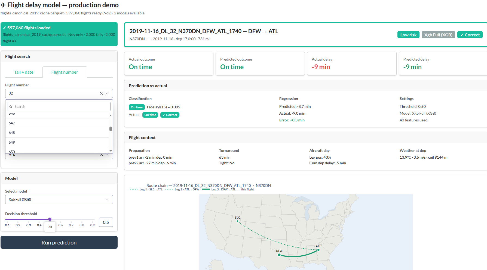

AeroFlux: From Flight Delay Prediction to a Cyber-Physical Intelligence Layer

What is AeroFlux?
AeroFlux is a predictive intelligence system for U.S. domestic flight delays. Given a specific flight — tail number, date, origin, destination — it predicts whether the flight will arrive 15+ minutes late and the estimated delay magnitude in minutes. Unlike single-flight models, AeroFlux encodes the full operational history of the aircraft, capturing the cascading nature of delay propagation across the network.
More broadly, AeroFlux is the seed of a cyber-physical intelligence layer — a dynamic, network-aware reasoning system designed to perceive, anticipate, and propagate consequences across tightly coupled physical systems before disruption converges. Aviation is the first proving ground because it is safety-critical, networked, data-rich, and highly sensitive to cascading delays.
The Problem It Addresses
Complex systems fail when disruptions propagate faster than their defenses can adapt. Static models name the holes; they don’t show which are aligning, or how fast. Two preventable collisions in fourteen months — the January 2025 DCA mid-air collision and the March 2026 LaGuardia ground collision — exposed the same structural gap: no shared, real-time awareness layer across moving actors operating in a shared environment.
AeroFlux is positioned as a higher-level pre-tactical fusion, simulation, and decision-support layer that complements certified tactical systems like ACAS Xr / TCAS, UAS Detect-and-Avoid, and ForeFlight — not a replacement.
What’s Built Today
A production-scale, propagation-aware ML pipeline trained on 61M+ U.S. domestic flight records (2015–2024) from the Bureau of Transportation Statistics, fused with NOAA hourly weather and airport metadata under strict temporal alignment (no look-ahead bias).
Core technical components:
- Data fusion pipeline — BTS flight records, NOAA weather observations, and airport metadata joined via UTC-normalized as-of joins, with engineered tail-rotation, congestion, and propagation features
- XGBoost production model — gradient-boosted trees (300 trees, depth 6, η = 0.05) trained on 61M flights in ~17 minutes using the histogram method, with dual classification/regression heads
- LSTM model — dual-output (classification + regression) over 3-timestep aircraft rotation sequences; built but deemed too memory-intensive for full multi-year deployment
- Time-aware rolling-origin cross-validation — 5 expanding-window folds (2015 → 2023) validating on subsequent years, with 2025 as a true unseen holdout
- Pre-departure constraint — no departure-delay leakage; uses only features available before the aircraft leaves the gate
Headline Results
On the 2025 holdout (6.86M unseen flights) after tuning:
| Metric | Value |
|---|---|
| AUC | 0.840 |
| F₁ | 0.554 |
| MAE | 20.3 min |
| Precision | 79% |
When the model issues a delay alert, it is right 4 out of 5 times — operationally useful for rebooking triage. Across 5 rolling-origin folds (2019–2023 validation years), mean AUC was 0.836 and mean MAE was 18.1 minutes.
The Dominant Signal
51% of total model importance comes from one feature: prev1_arr_del15 — was the same aircraft late on its previous leg? This single finding validates the central thesis: propagation is the signal. Upstream aircraft state dominates downstream delay outcomes. Most flight-delay models ask what is true about this flight? AeroFlux asks what state is the aircraft carrying into this flight?
Roadmap
AeroFlux is being built in stages, each standing on its own and unlocking the next:
- Stage 1 — Predictive ML Model (complete) — Offline gradient-boosted delay predictor on 61M flights with published methodology and reproducible pipeline.
- Stage 2 — Real-Time Inference (active, next 6 months) — Live data streaming, online serving, agentic copilot, richer feature streams (SWIM, NOTAMs, sentiment).
- Stage 3 — Network Simulation (12–18 months) — Rust-based forward simulator propagating disruptions through rotation chains, gates, crews, and passenger connections.
- Stage 4 — Cyber-Physical Intelligence Platform (18–36 months) — Operational digital twin of the NAS with pre-tactical decision support and conformance monitoring.
- Stage 5 — Multi-Domain Autonomy Layer (long-horizon) — Generalize the platform pattern to UAM, drones, AVs, ports, energy, and other systems of interdependent agents in physical space.
Try It & Read More
Live AeroFlux App — real-time delay prediction with route-chain visualization, propagation charts, and feature attribution
Open the OR568 project site on GitHub Pages — full methodology, ML workflow notebooks, and paper
OR568 Project repo on GitHub — data pipeline, ML pipeline, and reproducible environment
AeroFlux repo on GitHub — the inference system and web app
Propagate. Simulate. Orchestrate.